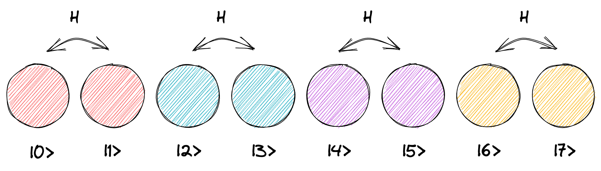
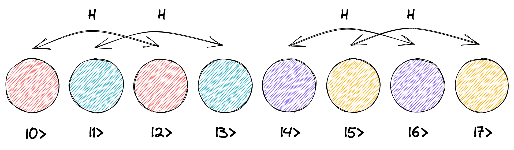
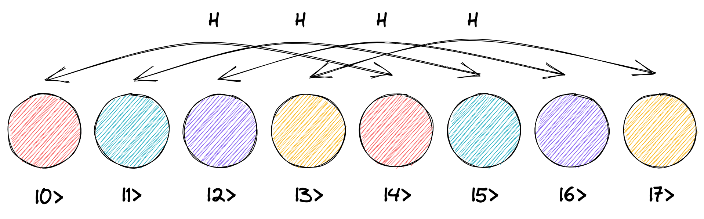

量子乱数ジェネレータ{% nmargin_note quantum-random-generator %}MEASUREMENT 命令を参照{% endnmargin_note %}は 1 ビットの乱数 0 または 1 を生成するものでした。
より大きな乱数を生成するにはどうしたらよいでしょうか? 今回は 8 個の量子ビットを使って、1 バイト (=
8 ビット, 0 から 255 まで) の乱数を生成する回路を紹介します。
次の回路は、1 ビット目から 8 ビット目それぞれに H
ゲートを適用し、最後にすべてのビットを測定します。 測定すると 0 から 255 までの数のうちどれか 1
つをランダムに出力します。
{% include mixer_horizontal.svg class="h-4 w-4 text-gray-700" %}
大筋としてこれがどのように動作しているか、状態ベクトル表示を使って調べてみましょう。 H
ゲートを全ビットに適用した時点の状態ベクトルを見ると、{% ket 0 %} から {% ket 255 %}
それぞれの確率は等しく 0.390625% (100 / 256 %) になります。 これを測定することで、{% ket 0 %} から
{% ket 255 %} のうちどれか 1 つがランダムに出力されます。
等しい重ね合わせができる仕組み
なぜ等しい重ね合わせ状態ができるか、H ゲートを 1
つずつ適用した時の状態ベクトルを詳しく見てみましょう。 以下では、スペースの都合上 3
量子ビットまでを見て行きます。
初期状態で 1 ビット目に H ゲートを適用すると、複数量子ビットにゲートを適用したときのルール{%
nmargin_note multi-qubit-operation %}複数量子ビットでの演算を参照{% endnmargin_note %}より、隣同士の円それぞれのペア に対して H ゲートが適用されます。

H ゲートはシンプルな重ね合わせを作る命令で、{% ket 0 %} の確率を等しく {% ket 0 %} と {% ket 1 %}
に割り振ります{% nmargin_note h-gate %}H ゲート参照{% endnmargin_note
%}。 ここでは 4 つのペアのうち、最初のペアの左側の円だけが確率 100% を持っています。
そこで最初のペアだけが 50% の重ね合わせ状態となり、ほかのペアは変化しません。
{{ 1 | qubit_circle: 0, 'lg' }} {{ 0 | qubit_circle: 1, 'lg' }} {{ 0 | qubit_circle: 2, 'lg'
}} {{ 0 | qubit_circle: 3, 'lg' }} {{ 0 | qubit_circle: 4, 'lg' }} {{ 0 | qubit_circle: 5,
'lg' }} {{ 0 | qubit_circle: 6, 'lg' }} {{ 0 | qubit_circle: 7, 'lg' }}
{% include divider_vertical.svg class="h-6 w-6 fill-current text-gray-400" %}
H ゲートを 1 ビット目に適用
{% include arrow_down.svg class="h-6 w-6 mb-8 fill-current text-gray-400" %}
{{ 0.5 | sqrt | qubit_circle: 0, 'lg' }} {{ 0.5 | sqrt | qubit_circle: 1, 'lg' }} {{ 0 |
qubit_circle: 2, 'lg' }} {{ 0 | qubit_circle: 3, 'lg' }} {{ 0 | qubit_circle: 4, 'lg' }} {{ 0
| qubit_circle: 5, 'lg' }} {{ 0 | qubit_circle: 6, 'lg' }} {{ 0 | qubit_circle: 7, 'lg' }}
ここで 2 ビット目に H ゲートを適用すると、2 つ離れた円同士のペアそれぞれに H
ゲートが適用されます。

ここでは 4 つのペアのうち、「{% ket 0 %} と {% ket 2 %}」、「{% ket 1 %} と {% ket 3
%}」のペアの左側の円が確率 50% を持っています。 そこでこれらのペアだけが 25%
の重ね合わせ状態となり、ほかのペアは変化しません。
{{ 0.5 | sqrt | qubit_circle: 0, 'lg' }} {{ 0.5 | sqrt | qubit_circle: 1, 'lg' }} {{ 0 |
qubit_circle: 2, 'lg' }} {{ 0 | qubit_circle: 3, 'lg' }} {{ 0 | qubit_circle: 4, 'lg' }} {{ 0
| qubit_circle: 5, 'lg' }} {{ 0 | qubit_circle: 6, 'lg' }} {{ 0 | qubit_circle: 7, 'lg' }}
{% include divider_vertical.svg class="h-6 w-6 fill-current text-gray-400" %}
H ゲートを 2 ビット目に適用
{% include arrow_down.svg class="h-6 w-6 mb-8 fill-current text-gray-400" %}
{{ 0.5 | qubit_circle: 0, 'lg' }} {{ 0.5 | qubit_circle: 1, 'lg' }} {{ 0.5 | qubit_circle: 2,
'lg' }} {{ 0.5 | qubit_circle: 3, 'lg' }} {{ 0 | qubit_circle: 4, 'lg' }} {{ 0 | qubit_circle:
5, 'lg' }} {{ 0 | qubit_circle: 6, 'lg' }} {{ 0 | qubit_circle: 7, 'lg' }}
同様に 3 ビット目に H ゲートを適用すると、4 つ離れた円同士のペアについて、全ペアの左の円が確率 25%
を持っているので、すべての円が等しく 12.5% の重ね合わせ状態となります。

{{ 0.5 | qubit_circle: 0, 'lg' }} {{ 0.5 | qubit_circle: 1, 'lg' }} {{ 0.5 | qubit_circle: 2,
'lg' }} {{ 0.5 | qubit_circle: 3, 'lg' }} {{ 0 | qubit_circle: 4, 'lg' }} {{ 0 | qubit_circle:
5, 'lg' }} {{ 0 | qubit_circle: 6, 'lg' }} {{ 0 | qubit_circle: 7, 'lg' }}
{% include divider_vertical.svg class="h-6 w-6 fill-current text-gray-400" %}
H ゲートを 3 ビット目に適用
{% include arrow_down.svg class="h-6 w-6 mb-8 fill-current text-gray-400" %}
{{ 0.125 | sqrt | qubit_circle: 0, 'lg' }} {{ 0.125 | sqrt | qubit_circle: 1, 'lg' }} {{ 0.125
| sqrt | qubit_circle: 2, 'lg' }} {{ 0.125 | sqrt | qubit_circle: 3, 'lg' }} {{ 0.125 | sqrt |
qubit_circle: 4, 'lg' }} {{ 0.125 | sqrt | qubit_circle: 5, 'lg' }} {{ 0.125 | sqrt |
qubit_circle: 6, 'lg' }} {{ 0.125 | sqrt | qubit_circle: 7, 'lg' }}
同じプロセスを 4 ビット目、5 ビット目、… と続けていくことで、最終的にすべての円が等しく確率
0.390625% (100/256 %) を持つようになります。
回路をコンパクトにする
最初の回路で 1 ビット目から 8 ビット目まで置いた H
ゲートは、それぞれが置かれたビットのみに作用します。 つまり、異なるビットに置いた H
ゲートはそれぞれ他のゲートとは独立して実行されるので、可能な限り左に詰めることで他のゲートと同時に実行できます。
このことを使うと、先ほどの回路は次のようにかなりコンパクトに書き直せます。
{% include mixer_horizontal.svg class="h-4 w-4 text-gray-700" %}
多くの量子アルゴリズムでは、最初の準備段階として、均一な重ね合わせ状態をこのように縦に並べた H
ゲートで作ります。 非常によく使うパターンですので覚えておきましょう。
{% include operation_menu.html %} {% include operation_inspector_template.html %}